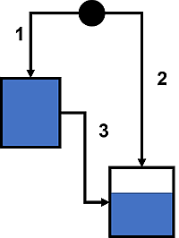
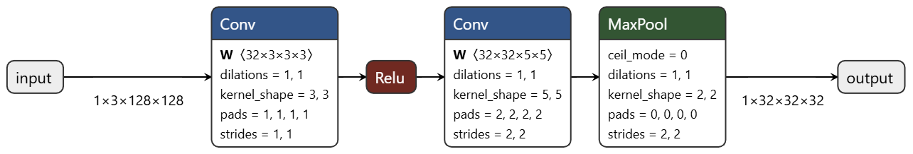
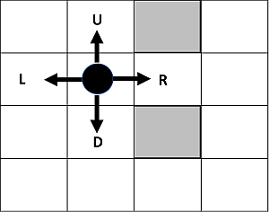

Искусственный интеллект¶
Вопрос 1. Энтропия распределения предсказаний (5)
У классификатора есть 4 класса: \((A,B,C,D)\). На одном конкретном примере распределение вероятностей предсказаний нейросети \((p_A, p_B, p_C, p_D)\) подчиняется условиям:
\(p_A = p_B\);
\(p_C = 2 p_D\);
\(p_A + p_B + p_C + p_D = 1\).
Необходимо определить распределение вероятностей, которое максимизирует энтропию распределения предсказаний, тем самым делая предсказания максимально разнообразными в рамках заданных ограничений:
Формат ввода
Четыре числа \((p_A, p_B, p_C, p_D)\), каждое округленное до третьего знака после запятой, внести через пробел.
Овтет: 0.257 0.257 0.324 0.162
Вопрос 2. Градиент во времени (5)
Задача предоставлена Институтом проблем управления им. В.А. Трапезникова РАН при поддержке Российской ассоциации искусственного интеллекта
В египетской пирамиде соорудили ловушку для расхитителей гробниц, управляемую гидравлическим автоматом. Автомат состоит из двух резервуаров одинакового объема V=10 л., соединенных трубами как показано на рисунке.
В начале работы оба резервуара пустые. Когда кто-то входит в гробницу, открываются трубы 1 и 2. Когда наполнился первый резервуар, раздаётся предупреждающий удар гонга, и открывается труба 3. Когда наполнился второй резервуар, в полу открывается люк, в который проваливается незваный гость. Жрецы хотят настроить резервуары так, чтобы удар гонга раздавался через \(t^* = 2\) секунды после начала работы, ещё через \(d = 2\) секунды открывался люк. Вот беда - после каждого срабатывания трубы приходится перенастраивать. Мудрый жрец предложил настраивать трубы методом обратного распространения ошибки. Он использует следующую функцию ошибки:
где \(t_1\), \(t_2\) - моменты наполнения 1-го и 2-го резервуаров при пропускных способностях труб. Вычислите производную ошибки \(E\) по пропускной способности трубы 3, если сейчас пропускные способности труб равны, соответственно, \(w_1 = 5\) л/с, \(w_2 = 2\) л/с, \(w_3 = 2\) л/с.
Формат ввода
Введите значение производной с точностью до 4 знаков после запятой.
Формат вывода
Введите значение производной с точностью до 4 знаков после точки.
-0.1875
Вопрос 3. Минимальный шаг (5)
Задача предоставлена Центром когнитивного моделирования МФТИ
Рассмотрим функцию потерь:
Начальное состояние и закон движения заданы так:
где \(\beta = 0.8\) - коэффициент момента, \(\eta > 0\) - шаг движения.
Формат ввода
Найти минимальное положительное значение \(\eta\), округленное до третьего знака после запятой, такое, чтобы после двух шагов движения алгоритм достигает ровно минимума функции \(L(x, y)\) по \(x\).
0.042
Вопрос 4. Рецептивное поле (5)
Задача предоставлена Центром когнитивного моделирования МФТИ
Рассмотрим сверточную нейронную сеть, архитектура которой представлена на рисунке.
Пояснения к аттрибутам каждого из блоков на схеме подробнее приведены по соответстующим ссылкам: Conv, ReLU, MaxPool.
Пусть на вход сети подаётся тензор размера \(3 \times 128 \times 128\), где первое измерение соответствует числу каналов, а остальные - высоте и ширине изображения.
Требуется определить размер рецептивного поля для элемента \(y_{i, j}\) выходного тензора. Иными словами, необходимо найти размеры области входного тензора, изменение значений в которой может повлиять на значение элемента \(y_{i, j}\) выходного тензора. \(y_{i, j}\) - любой элемент, для которого рецептивное поле полностью помещается во входное изображение, не выходя за его границы.
Формат ввода
Два числа, каждое округленное до целого, внести через пробел - высота и ширина рецептивного поля.
9 9
Вопрос 5. Углеродный след (5)
Задача предоставлена Научно-образовательным центром когнитивного моделирования МФТИ
На рисунке приведена схема условной нейросетевой модели, которая принимает на вход и возвращает тензор одной размерности ⟨1x32x64x64⟩. Граф вычисления выхода модели, обозначенный стрелками на схеме, состоит из следущих типовых нейросетевых блоков и операций:
Conv - оператор свертки (convolution), где \(W\) - тензор весов, \(B\) - тензор смещений, параметр groups=1 (см. подробнее об именных аргументах);
Sigmoid - функция активации сигмоида (см. подробнее);
Mul - поэлементное умножение.
Граф вычисления нейросетевой модели можно охарактеризовать с помощью количетсва FLOPs (floating point operations). FLOP используется как единица измерения вычислений, таких как одно вычитание, сложение, умножение, деление чисел, и т. д. Например, для векторов \(a, b \in \mathbb{R}^n\) и скаляров \(c, d \in \mathbb{R}\):
\(a+b\) требует \(n\) FLOPs для \(n\) поэлементных сложений;
\(c \cdot a\) требует \(n\) FLOPs для \(n\) поэлементных умножений;
\(c \cdot d \cdot a\) требует \(n+1\) операцию, если вычислять выражение как \((c \cdot d) \cdot a\), и \(2n\) операций, если как \(c \cdot (d \cdot a)\): в таких случаях выбирается оптимальный порядок (обеспечивающий наименьшее количество операций);
будем считать, что такие операции, как присвоения значения элемента или изменение размерности, занимают \(0\) FLOP.
Для сложных математических операций и функций значение FLOPs может варьироваться в зависимости от их реализации. Примем, что \(exp^x\) требует ровно \(100\) FLOPs.
Перед вами стоит задача минимизировать углеродный след от обучения, но для этого сначала необходимо рассчитать его для приведенной нейросетевой архитектуры. Взяв за формулу, что выделение 4e-13 кг углекислого газа равносильно вычислению \(1\) FLOP, рассчитайте текущий углеродный след.
Формат ввода
Одно положительное число — значение рассчитанного углеродного следа в кг, умноженное на 1e4 и округленное до второго знака после запятой.
Вопрос 6. Линейное внимание (7)
Задача предоставлена Центром когнитивного моделирования МФТИ
Рассмотрим вариант нейросетевого блока, который задается следующей формулой:
где \(\alpha_s\) — вектор поэлементного затухания на шаге \(s\), \(\text{Diag}(\alpha_s)\) — диагональная матрица с элементами \(\alpha_s\), \(q_t\) и \(k_j\) — строки матриц \(Q\) и \(K\), \(v_j\) - строки матрицы \(V\).
Даны матрицы \(A\), \(C\), \(V\), \(B\) размерности \(L \times d\), соответствующие преобразованным входам:
где \(Q\), \(K\), \(V\) - матрицы значений, \(B\) - накопленные коэффициенты \(B_t = \prod_{s=1}^t a_s\), \(a \odot\) и \(/\) обозначают поэлементное умножение и деление соответственно.
Используя входные данные вычислите матрицу выходов \(O\).
Формат ввода
В первой строке дано два положительных целых числа через пробел: размерности \(L\) и \(d\).
В следующих \(L\) строках даны значений матрицы \(A\), в каждой строке по \(d\) действительных значения через пробел.
В следующих \(L\) строках даны значений матрицы \(С\), в каждой строке по \(d\) действительных значения через пробел.
В следующих \(L\) строках даны значений матрицы \(V\), в каждой строке по \(d\) действительных значения через пробел.
Формат вывода
\(L\) строках со значениями матрицы \(O\), в каждой строке по \(d\) действительных значения через пробел.
Система оценивания
Ваш ответ будет засчитан как правильный, если относительная погрешность от правильного для каждого выходного значения составляет не более \(10^{-5}\).
Вопрос 7. Обучаемый поток (7)
Задача предоставлена Центром когнитивного моделирования МФТИ
Предположим что мы хотим моделировать движение точек в многомерном пространстве от начального состояния \(x_0 \in \mathbb{R}^d\) к целевому состоянию \(x_1 \in \mathbb{R}^d\) через векторное поле \(f_W(x)\), параметризованное матрицей обучаемых весов \(W \in \mathbb{R}^{d \times d}\), что описывает некий генеративный нейросетевой процесс.
Пусть промежуточные точки между \(x_0\) и \(x_1\) задаются функцией
где \(p > \frac{1}{2}\) — параметр, определяющий кривизну траектории.
Обучаемое векторное поле задаётся линейной матрицей:
где \(f_W(x_t)\) для каждой точки \(x_t\) предсказывает «скорость» движения в пространстве \(\mathbb{R}^d\).
Тогда цель состоит в том, чтобы наша модель \(f_W(x_t)\) приближала реальную «скорость» движения вдоль траектории.
Целевая «скорость» задаётся как производная от траектории:
Таким образом ошибка моделирования:
а функция потерь для обучения представляет из себя интеграл квадрата нормы ошибки по времени:
Этот интеграл аналогичен среднеквадратичной ошибке для непрерывной траектории.
Напишите программу, которая по входным данным \((x_0, x_1, p, W)\) вычислит матрицу градиента \(\nabla_W \mathcal{L}\).
Формат ввода
В первой строке дано целое положительное значение \(d\) — используемая в задаче размерность.
Во второй строке через пробел перечислены \(d\) действительных чисел, составляющие вектор \(x_0 \in \mathbb{R}^d\).
В третьей строке через пробел перечислены \(d\) действительных чисел, составляющие вектор \(x_1 \in \mathbb{R}^d\).
В четвертой сроке дано одно положительное действительное число — значение параметра \(p > \frac{1}{2}\).
В последующих \(d\) строках в каждой через пробел перечислены \(d\) действительных чисел, составляющие строки матрицы весов \(W \in \mathbb{R}^{d \times d}\).
Формат вывода
\(d\) строк — в каждой через пробел перечислены \(d\) действительных чисел, составляющие строки матрицы градиента \(\nabla_{W} \mathcal{L} \in \mathbb{R}^{d \times d}\).
Система оценивания
Ваш ответ будет засчитан как правильный, если относительная погрешность от правильного для каждого выходного значения составляет не более \(10^{-5}\).
Вопрос 8. Экспоненциальный закон (7)
Задача предоставлена НИЦ "Курчатовский институт"-НИИСИ при поддержке Российской нейросетевой ассоциации
Предположим что есть \(n\) "рецепторов запаха", которые реагируют на конкретный "запах" следующим образом: для каждого из \(n\) рецепторов их активность имеет вероятностный вид:
где \(k \in (0.002, 0.05)\) - некоторый параметр "рецептора" (зависящий от запаха), \(x_i \geqslant 0\) - его активность (округлённая до ближайшего целого числа). Для каждого отдельного "запаха" вектор параметров рецепторов \(k = (k_1, k_2, \ldots, k_n)\) является случайным и фиксированным, но эти векторы существенно различны для разных "запахов". Все \(x_i\) генерируются независимо и случайно по описанному выше экспоненциальному закону. В задаче предлагается небольшой обучающий набор данных активностей "рецепторов", состоящий из \(M\) примеров для каждого из \(C\) "запахов".
Значения чисел лежат в следующих диапазонах:
\(10 \leqslant n \leqslant 100\).
\(3 \leqslant C \leqslant 10\).
\(7 \leqslant M \leqslant 100\).
Необходимо определить номер наиболее вероятного "запаха" для тестового вектора активности. Считайте, что наборы сильно отличаются для разных запахов и решение единственно.
Формат ввода
В первой строке дано три числа \(M, C, n > 0\) - целые числа через запятую, задающие количество примеров, количество различных "запахов" и количество "рецепторов" соответственно.
Далее выводится матрица чисел размера \(CM \times n\) следующего вида:
в первых \(M\) строках идут \(n\) целых чисел \(x_i \geqslant 0\) через запятую - значения примеров активностей "рецепторов" для 1-го запаха;
в следующих \(M\) строках идут \(n\) целых чисел \(x_i \geqslant 0\) через запятую - значения примеров активностей "рецепторов" для 2-го запаха;
...
в следующих \(M\) строках идут \(n\) целых чисел \(x_i \geqslant 0\) через запятую - значения примеров активностей "рецепторов" для C-го запаха.
Наконец, в последней строке даны \(n\) целых чисел \(x_i \geqslant 0\) через запятую - значения активностей "рецепторов" для неизвестного запаха, номер которого нужно определить.
Формат вывода
Выведите одно целое число от \(1\) до \(C\) - номер наиболее вероятного "запаха", соответствующего заданной активности в последней строке входных данных.
Вопрос 9. Исследование черного ящика (7)
Недавно на чердаке вы нашли старый прибор. К сожалению, прибор оказался сломан, и вы не помните, что он делал, поэтому сейчас для вас он является черным ящиком.
Прибор работал по следующему принципу: с помощью \(k\) колесиков можно было задать \(k\) вещественных чисел \(x_1\), \(x_2\), ..., \(x_k\) (каждое от \(0\) до \(10\)) на вход, и прибор выдавал некоторое вещественное число \(f(x_1, x_2, \ldots, x_k)\) в качестве результата. Для начала вы бы хотели узнать, чему равны математическое ожидание и дисперсия результата, если вы задаете все входные параметры независимо случайно равновероятно, каждый параметр выбирается из равномерного распределения на отрезке \([0, 10]\).
К счастью, рядом с прибором вы обнаружили записи, содержавшие некоторое количество результатов запуска прибора. Используя эти данные, вы обучили ансамбль решающих деревьев \(\hat{f}(x_1, x_2, \ldots, x_k)\).
Для оценки математического ожидания и дисперсии черного ящика найдите математическое ожидание и дисперсию \(\hat{f}(x_1, x_2, \ldots, x_k)\) при независимом случайном равновероятном равномерном выборе \(x_i\).
Формат ввода
В первой строке находится два целых числа \(n\), \(k\) (\(1 \leqslant n \leqslant 100\), \(1 \leqslant k \leqslant 10\)) — количество решающих деревьев в ансамбле и количество входных параметров черного ящика.
Описание каждого решающего дерева начинается с единственного целого числа \(l\) (\(0 \leqslant l \leqslant 6\)) — глубины решающего дерева. Каждое решающее дерево в ансамбле является полным двоичным деревом, в котором \(2^l - 1\) внутренних вершин и \(2^l\) листьев, каждое из которых имеет глубину ровно \(l\). Внутренние вершины пронумерованы от \(1\) до \(2^l - 1\), листья пронумерованы от \(2^l\) до \(2^{l+1} - 1\). У внутренней вершины \(i\) левый сын это вершина \(2i\), правый сын это вершина \(2i + 1\). Далее идет описание решающего дерева.
Каждая из следующих \(2^l - 1\) строк содержит два целых числа \(j\), \(t\) (\(1 \leqslant j \leqslant k\), \(1 \leqslant t \leqslant 9\)). Эти числа, записанные в \(i\)-й из этих строк, означают, что при применении решающего дерева в вершине \(i\), если \(x_j < t\), то мы спускаемся в левого сына \(2i\), иначе, если \(x_j \geqslant t\), то мы спускаемся в правого сына \(2i + 1\).
Последняя строка описания решающего дерева содержит \(2^l\) целых чисел \(c_{2^l}\), \(c_{2^l + 1}\), ..., \(c_{2^{l+1} - 1}\) (\(-10 \leqslant c_i \leqslant 10\)) — значения в соответствующих листьях решающего дерева.
Значение ансамбля \(\hat{f}(x_1, x_2, \ldots, x_k)\) равно сумме значений для всех решающих деревьев.
Формат вывода
Выведите два вещественных числа — найденные математическое ожидание и дисперсию \(\hat{f}(x_1, x_2, \ldots, x_k)\).
Ваш ответ будет зачтен, если абсолютная или относительная ошибка этих чисел не превышает \(10^{-6}\); формально, если \(p\) это ваш ответ и \(j\) это ответ жюри, должно быть выполнено: \(\frac{\lvert p - j \rvert}{\max \{ 1, \lvert j \rvert \}} \leqslant 10^{-6}\).
Вопрос 10. Предсказание поведения (7)
Задача предоставлена Институтом проблем управления им. В.А. Трапезникова РАН при поддержке Российской ассоциации искусственного интеллекта
В лабиринте с 4-связной сеткой ездит робот. Размер лабиринта \(H \leqslant 100\) строк и \(W \leqslant 100\) столбцов. Также в лабиринте есть \(N_{obstacle} \leqslant WH / 2\) препятствий.
Сенсоры робота сообщают ему о наличии препятствий в четырех соседних клетках. Стенка тоже считается препятствием. Время дискретно: \(t = 0, 1, \ldots\) Сигналы с сенсоров составляют вектор \(s(t) = (o_U, o_R, o_D, o_L)\), где \(o_i = 1\), если в направлении \(i \in \{ U, R, D, L \}\) есть препятствие. Начиная с шага \(t = 1\), робот помнит своё действие на предыдущем шаге \(a(t-1) \in \{ U, R, D, L \}\).
На каждом шаге робот выбирает одно из четырех направления движения: вверх (U), вправо (R), вниз (D), влево (L). Выбор определяется по \(s(t)\) и \(a(t - 1)\). Алгоритм выбора неизвестен, но детерминирован и включает два ограничения:
Робот никогда не выбирает направление движения в клетку, занятую препятствием;
При наличии других доступных действий робот не будет возвращаться в клетку, в которой находился на предыдущем шаге.
Требуется, наблюдая действия робота на первых \(1 \leqslant T \leqslant 100\) шагах, предсказать его поведение на следующих \(K \leqslant 100\) шагах. Робот всегда начинает путь с верхнего левого угла: \(row = 0\), \(col = 0\).
Данные сгенерированы таким образом, что наблюдаемой траектории всегда достаточно для того, чтобы корректно предсказать её продолжение. Для каждого тестового примера алгоритм выбирался случайным образом из конечного множества заранее заданных алгоритмов. В разных тестах алгоритмы могут совпадать.
Формат ввода
Программа получает на вход текстовые строки. Первая строка содержит числа \(H\), \(W\), \(N_{obstacle}\), \(T\), \(K\).
Следующие \(N_{obstacle}\) строк содержат координаты препятствий \(row \in \{ 0, \ldots, H - 1 \}\), \(col \in \{ 0, \ldots, W - 1 \}\) в формате:
row1 col1
row2 col2
...
Следующие \(T\) строк содержат действия робота на шагах \(t = 0, \ldots, T-1\):
L
R
U
D
...
Формат вывода
Программа должна вывести \(K\) строк, каждая строка содержит действие робота на шаге \(t = T, \ldots, T+K-1\):
R
L
D
U
Вопрос 11. ИИ, продай мне этот аккумулятор! (10)
Задача предоставлена Институтом искусственного интеллекта AIRI
Перед тобой — реальные данные о запущенных рекламных объявлениях: даты, форматы, тип устройств, таргетинг, возраст и пол аудитории, наличие брендов, тексты и заголовки.
Каждая строка — это попытка настроить маркетинговую кампанию для продажи автомобильных аккумуляторов: заставить пользователя кликнуть, заинтересоваться и сделать выбор.
Но не каждое объявление успешно. Иногда даже самый яркий креатив тонет в ленте, а иной — на первый взгляд простой — внезапно срабатывает вопреки логике.
Твоя задача — научить искусственный интеллект различать, какие рекламные кампании вызовут спрос, а какие — нет.
Целевая переменная — \(wCTR\) (weighted Click-Through Rate): она показывает, была ли реальная реакция на объявление.
Если \(wCTR > 0\), значит пользователи проявили интерес (есть клики, есть спрос).
Если \(wCTR = 0\), реклама осталась без внимания.
Формат ввода
Данные доступны по ссылке: https://disk.yandex.ru/d/47ktlsB2BRsxSA.
X_train.csv— обучающая выборка с признаками рекламных кампаний (формат, тип устройства, категория таргетинга, текст объявления и др.)y_train.csv— целевая переменная, отражающая факт возникновения спроса.
Целевая переменная — бинаризованный показатель эффективности кампании:
\(y = 1\), если \(wCTR > 0\) (пользователи проявили интерес),
\(y = 0\), если \(wCTR = 0\) (кампания не вызвала отклика).
Формат вывода
На основе признаков рекламных объявлений необходимо построить модель, которая будет классифицировать кампании по вероятности того, что они вызовут спрос (wCTR > 0). Файл sample_submission.csv (доступный на диске) содержит требуемый формат сдачи. Этот файл с вашими предсказаниями прикрепляется в интерфейсе задачи для получения баллов. Файл должен содержать одну колонку, название которой — 0. Каждая последующая строка — это предсказание модели (0 или 1) для соответствующей строки из тестового датасета.
Система оценивания
Итоговая оценка строится на Accuracy, но начинает начисляться только, если качество выше порога случайного угадывания (0.5). Если Accuracy ≤ 0.5, то баллы равны нулю. Если Accuracy > 0.5, то оценка вычисляется линейно по формуле. Таким образом, 0 баллов соответствует точности 0.5, а 10 баллов — точности 1.0.
Примечания
После окончания контеста баллы прошкалируются в соответствии с баллом наилучшего решения среди участников. Наилучшее решение получит 10 баллов, остальные решения будут перезачтены с поправочным коэффициентом относительно баллов лучшего решения.
Вопрос 12. Искусственный ученый (10)
Задача предоставлена Институтом искусственного интеллекта AIRI
AI Scientist — это флагманский проект стартапа Sakana AI, одного из самых амбициозных и интересных исследований в области искусственного интеллекта. Система предназначена для автоматизации всего научного исследовательского процесса: от генерации идей → написания кода → проведения экспериментов → анализа результатов → до написания научной статьи. Вместо создания одной крупной монолитной модели Sakana AI использует подход коллективного интеллекта.
В данной задаче нужно отличить два типа аннотаций к статьям: реальные (написанные человеком, возможно слегка исправленные с помощью LLM) и полностью сгенерированные AI на основе одного лишь названия статьи. Для каждой из 2025 статей есть ровно две аннотации — одна человеческая и одна AI-сгенерированная.
Формат ввода
Данные доступны по ссылке: https://disk.yandex.ru/d/sIc1_nsY2AQQZw.
Файл abstracts.json содержит словарь из 4050 аннотаций для 2025 статей. Каждая аннотация представлена в виде объекта:
{<idx>: <abstract text>, ...}`
Формат вывода
Для каждой аннотации в файле submit.json необходимо указать, была ли она сгенерирована AI, значениями true или false:
{<idx>: <is AI generated>, ...}`
В интерфейсе задачи для получения баллов прикладывается именно этот файл с вашими ответами.
Система оценивания
где \(T\) - количество статей, для которых обе аннотации классифицированы верно (и сгенерированная, и человеческая). Максимальный балл — 10.
Примечания
После окончания контеста баллы прошкалируются в соответствии с баллом наилучшего решения среди участников. Наилучшее решение получит 10 баллов, остальные решения будут перезачтены с поправочным коэффициентом относительно баллов лучшего решения.
Вопрос 13. Планирование движения робота (10)
Задача предоставлена Институтом искусственного интеллекта AIRI
Алгоритмы планирования, такие как Model Predictive Control (MPC), широко применяются для локального планирования движения мобильных роботизированных платформ. Для эффективной работы таких алгоритмов требуется аналитическое представление потенциала (стоимости столкновения) в каждой точке пространства. Этот потенциал должен учитывать как текущую карту препятствий, так и траекторию движения робота.
В данной задаче предлагается построить модель нейронной сети, которая возвращает дифференцируемую стоимость столкновения на 5 последующих шагов в зависимости от позы робота и предыдущих 5 карт препятствий.
Формат ввода
Для обучения и тестирования предоставляется следующий набор данных, который доступ по ссылке https://disk.yandex.ru/d/7p_HI6pz_z3F4w в архиве:
train_data:
1.1. train_maps
Формат: Массив карт препятствий
Размерность: (50, 11, 50, 50)
Описание:
50 карт препятствий
Каждая карта имеет размер 50×50 пикселей
Дополнительная размерность (11) представляет собой последовательность кадров, отображающих движение динамических препятствий на карте
1.2. train_data
Формат: Массив координат и ориентаций робота
Размерность: (50, 11, 2500, 4, 3)
Описание:
10000 точек пространства с известными значениями потенциалов для каждой карты
Размерность (11) представляет собой последовательность кадров, отображающих движение динамических препятствий на карте
Размерность 4 соответствует различным вариантам ориентации робота в одной и той же пространственной точке
Каждая точка содержит координаты (X, Y) и угол ориентации θ
1.3. train_answers
Формат: Массив значений потенциалов
Размерность: (50, 11, 2500, 4)
Описание:
Содержит значения потенциалов (стоимости столкновения) для всех точек из train_data
Размерность (11) представляет собой последовательность кадров, отображающих движение динамических препятствий на карте
Размерность 4 соответствует различным вариантам ориентации робота в одной и той же пространственной точке
val_data/:
2.1. val_maps
Формат: Массив карт препятствий
Размерность: (5, 11, 50, 50)
Описание:
5 карт препятствий
Каждая карта имеет размер 50×50 пикселей
Дополнительная размерность (11) представляет собой последовательность кадров, отображающих движение динамических препятствий на карте
2.2. val_data
Формат: Массив координат и ориентаций робота
Размерность: (5, 11, 250, 4, 3)
Описание*:
1000 точек пространства с известными значениями потенциалов
Размерность (11) представляет собой последовательность кадров, отображающих движение динамических препятствий на карте
Размерность 4 соответствует различным вариантам ориентации робота в одной и той же пространственной точке
Каждая точка содержит координаты (X, Y) и угол ориентации θ
2.3. val_answers
Формат: Массив значений потенциалов
Размерность: (5, 11, 250, 4)
Описание:
Содержит значения потенциалов (стоимости столкновения) для всех точек из val_data
Размерность (11) представляет собой последовательность кадров, отображающих движение динамических препятствий на карте
Размерность 4 соответствует различным вариантам ориентации робота в одной и той же пространственной точке
test_data/:
3.1. test_maps
Формат: Массив карт препятствий
Размерность: (2, 11, 50, 50)
Описание: - 2 карты препятствий - Каждая карта имеет размер 50×50 пикселей - Дополнительная размерность (11) представляет собой последовательность кадров, отображающих движение динамических препятствий на карте
3.2. test_data
Формат: Массив координат и ориентаций робота
Размерность: (2, 11, 25, 4, 3)
Описание:
100 точек пространства с известными значениями потенциалов
Размерность (11) представляет собой последовательность кадров, отображающих движение динамических препятствий на карте
Размерность 4 соответствует различным вариантам ориентации робота в одной и той же пространственной точке
Формат вывода
3.3. test_answers
Формат: Массив значений потенциалов
Размерность: (2, 5, 25, 4)
Описание: предсказывается значение потенциала (одно число) для точки на карте (X,Y,Theta) на 5 шагов вперед
Содержит значения потенциалов (стоимости столкновения) для всех точек из test_data
Размерность (5) представляет собой последовательность кадров, отображающих движение динамических препятствий на карте
Формат посылки (csv файл с вашими предсказаниями test_answers, который необходимо прикрепить в интерфейсе задачи для получения баллов), а также пример кода для ее получения, однозначно определяющий формат предсказания, доступен в базовом решение по ссылке на диске.
Система оценивания
Оценка решений участников будет производиться по метрике Mean Squared Error (MSE) между предсказанными значениями потенциала и эталонными значениями (Ground Truth) на тестовом наборе данных.
Формула расчета баллов:
Пусть MSE - значение метрики MSE на тестовом наборе:
0 баллов, если MSE > 0.12
10 баллов, если MSE < 0.050
промежуточное количество баллов рассчитывается линейно для значений \(0.050 \leqslant MSE \leqslant 0.12\) по формуле:
Примечания
После окончания контеста баллы прошкалируются в соответствии с баллом наилучшего решения среди участников. Наилучшее решение получит 10 баллов, остальные решения будут перезачтены с поправочным коэффициентом относительно баллов лучшего решения.
Семантическая сегментация (10)
Задача предоставлена Центром когнитивного моделирования МФТИ
В данной задаче нужно обучить алгоритм, который будет выполнять семантическую сегментацию изображения по эмбеддингам предобученной визуальной модели.
Вам даны:
извлеченные DINOv2-эмбеддинги изображений (для обучающей и валидационных частей);
истинная (Ground Truth) разметка в виде масок для обучающей части (размера $(H, W));
вспомогательные скрипты для оценки и подготовки ответа с подробным описанием их использования.
Ваша цель:
обучить модель, которая по эмбеддингам восстанавливает попиксельную карту классов исходного изображения размера \((H, W)\);
сгенерировать файл answer_pred_val_image.json с предсказанными классами для каждого пикселя всех изображений в валидационной части.
Формат ввода
Эмбеддинги изображений для обучающей выборки доступны по отдельной ссылке. Рекомендуем приступить к их загрузке заранее, так как они имеют размер в 3.6 Гб (https://storage.yandexcloud.net/iprofi-test-files/seasons/9/ai/datasets/train_dataset.zip). Остальные данные находятся на диске по ссылке https://disk.yandex.ru/d/GwVO9-iyB66xvg.
Формат вывода
Оценка происходит по файлу, который загружается в интерфейсе задачи и который должен содержать попиксельные предсказания классов для всех изображений в валидационной части.
Формат JSON-ответа:
{
"00000": [c_0, c_1, ..., c_{H*W-1}],
"00001": [...],
...
}
где каждый c_k — целочисленный индекс класса пикселя, порядок — по строкам (row-major), сначала по ширине, затем по высоте.
Предоставляемый скрипт prepare_answer_dummy.py показывает минимальный пример генерации такого файла (в нём все пиксели относятся к классу 0).
Система оценивания
Для каждого класса \(c\) метрика Intersection over Union (IoU) определяется как:
где
\(TP_c\) — число истинно положительных пикселей класса \(c\),
\(FP_c\) — число ложноположительных пикселей,
\(FN_c\) — число ложноотрицательных пикселей.
Среднее значение IoU по всем классам (mIoU) вычисляется как:
где \(K\) — количество классов.
Баллы за решение выставляются согласно формуле:
Примечания
После окончания контеста баллы прошкалируются в соответствии с баллом наилучшего решения среди участников. Наилучшее решение получит 10 баллов, остальные решения будут перезачтены с поправочным коэффициентом относительно баллов лучшего решения.